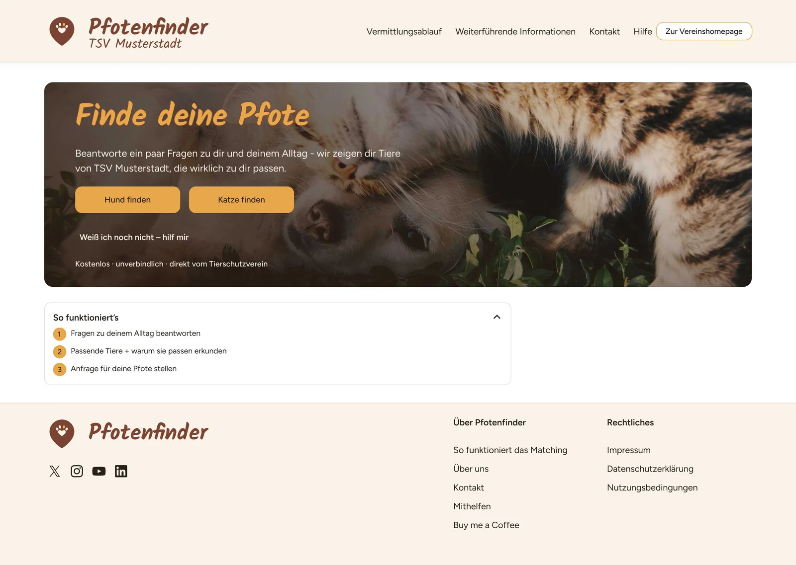
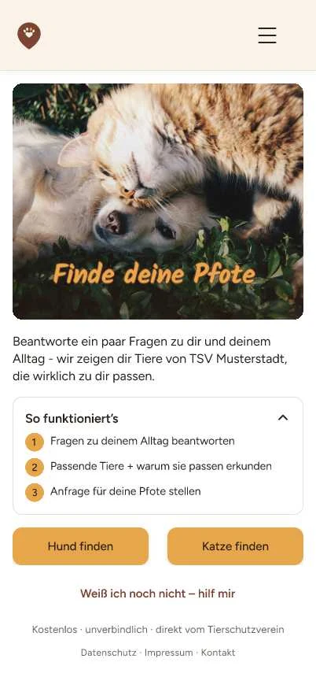

- UX Research
- Konzept
- Prototyping
- Bootcamp 2026
Pfotenfinder
Passende Vermittlung von Tierschutztieren
Viele Adoptionen scheitern nicht am guten Willen, sondern an der zu späten Passungsfrage. Pfotenfinder dreht die Suche um: erst klären, was zum eigenen Alltag passt, dann verlieben.
- Interviews
- 4
- Umfrage-Antworten
- 102
- Erkenntnisse
- 40

